Publications
Preprints & Submitted
24. Three-dimensional simulations of variable-viscosity gravity currents
Pedro H. A. Anjos, Eckart Meiburg, and Rafael M. Oliveira
Submitted
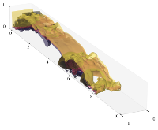
23. Interfacial properties and inertial effects in the growth of three-dimensional miscible viscous fingers with nonmonotonic viscosity profile
Bruno J. M. Santos, Pedro H. A. Anjos, and Rafael M. Oliveira
Submitted
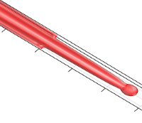
22. Optimizing injection protocols in Hele-Shaw displacements: a trade-off between swept area and injection time
Anna L. M. B. Mattos, Rafael M. Oliveira, Pedro H. A. Anjos, and Eduardo O. Dias
Submitted
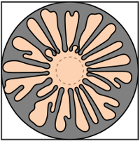
Published
2026
2025
21. Ferrofluid drop in an off-centered radial magnetic field
Írio M. Coutinho, Pedro H. A. Anjos, Rafael M. Oliveira, and José A. Miranda
Phys. Fluids 37, 082108 (2025)
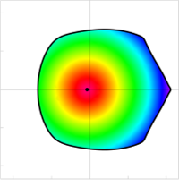
2024
20. Fingering stabilization and adhesion force in the lifting flow with a fluid annulus
Írio M. Coutinho, Pedro H. A. Anjos, Rafael M. Oliveira, and José A. Miranda
Phys. Rev. E 109, 015104 (2024)
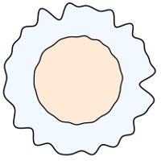
2023
19. Numerical study on viscous fingering using electric fields in a Hele-Shaw cell
Meng Zhao, Pedro H. A. Anjos, John Lowengrub, Wenjun Ying, and Shuwang Li
Commun. Comput. Phys. 33, 399 (2023)
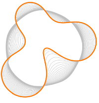
2022
18. Controlling fluid adhesion force with electric fields
Pedro H. A. Anjos, Francisco M. Rocha, and Eduardo O. Dias
Phys. Rev. E 106, 055109 (2022)
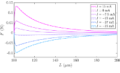
17. Electrically controlled self-similar evolution of viscous fingering patterns
Pedro H. A. Anjos, Meng Zhao, John Lowengrub, and Shuwang Li
Phys. Rev. Fluids 7, 053903 (2022)
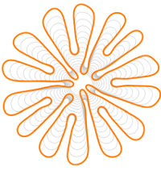
16. Ferrofluid annulus in crossed magnetic fields
Pedro O. S. Livera, Pedro H. A. Anjos, and José A. Miranda
Phys. Rev. E 105, 045106 (2022)
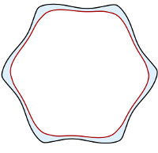
2021
15. Shape instabilities in confined ferrofluids under crossed magnetic fields
Rafael M. Oliveira, Írio M. Coutinho, Pedro H. A. Anjos, and José A. Miranda
Phys. Rev. E 104, 065113 (2021)
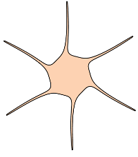
14. Magnetically induced interfacial instabilities in a ferrofluid annulus
Pedro O. S. Livera, Pedro H. A. Anjos, and José A. Miranda
Phys. Rev. E 104, 065103 (2021)
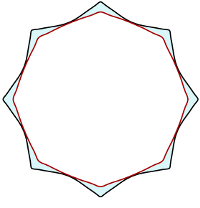
13. Controlling fingering instabilities in Hele-Shaw flows in the presence of wetting film effects
Pedro H. A. Anjos, Meng Zhao, John Lowengrub, Weizhu Bao, and Shuwang Li
Phys. Rev. E 103, 063105 (2021)
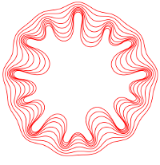
2020
12. Pattern formation of the three-layer Saffman-Taylor problem in a radial Hele-Shaw cell
Meng Zhao, Pedro H. A. Anjos, John Lowengrub, and Shuwang Li
Phys. Rev. Fluids 5, 124005 (2020)
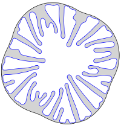
11. Weakly nonlinear analysis of the Saffman-Taylor problem in a radially spreading fluid annulus
Pedro H. A. Anjos, and Shuwang Li
Phys. Rev. Fluids 5, 054002 (2020)
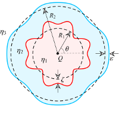
2019
10. Wrinkling and folding patterns in a confined ferrofluid droplet with an elastic interface
Pedro H. A. Anjos, Gabriel D. Carvalho, Sérgio A. Lira, and José A. Miranda
Phys. Rev. E 99, 022608 (2019)
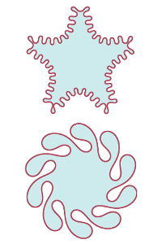
2018
9. Fingering instability transition in radially tapered Hele-Shaw cells: Insights at the onset of nonlinear effects
Pedro H. A. Anjos, Eduardo O. Dias, and José A. Miranda
Phys. Rev. Fluids 3, 124004 (2018)
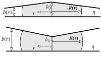
8. Fingering patterns in magnetic fluids: Perturbative solutions and the stability of exact stationary shapes
Pedro H. A. Anjos, Sérgio A. Lira, and José A. Miranda
Phys. Rev. Fluids 3, 044002 (2018)
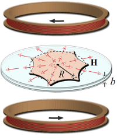
2017
7. Rotating Hele-Shaw cell with a time-dependent angular velocity
Pedro H. A. Anjos, Victor M. M. Alvarez, Eduardo O. Dias, and José A. Miranda
Phys. Rev. Fluids 2, 124003 (2017)
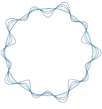
6. Radial fingering under arbitrary viscosity and density ratios
Pedro H. A. Anjos, Eduardo O. Dias, and José A. Miranda
Phys. Rev. Fluids 2, 084004 (2017)
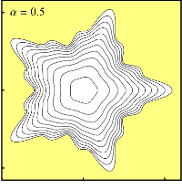
5. Inertia-induced dendriticlike patterns in lifting Hele-Shaw flows
Pedro H. A. Anjos, Eduardo O. Dias, and José A. Miranda
Phys. Rev. Fluids 2, 014003 (2017)
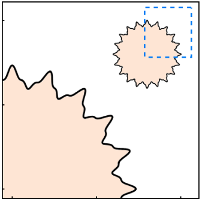
2015
4. Kinetic undercooling in Hele-Shaw flows
Pedro H. A. Anjos, Eduardo O. Dias, and José A. Miranda
Phys. Rev. E 92, 043019 (2015)
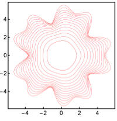
3. Adhesion force in fluids: Effects of fingering, wetting, and viscous normal stresses
Pedro H. A. Anjos, Eduardo O. Dias, Laércio Dias, and José A. Miranda
Phys. Rev. E 91, 013003 (2015)
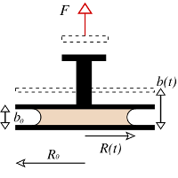
2014
2. Influence of wetting on fingering patterns in lifting Hele-Shaw flows
Pedro H. A. Anjos, and José A. Miranda
Soft Matter 10, 7459 (2014)
(cover page article)
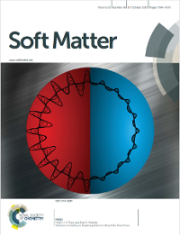
2013
1. Radial viscous fingering: Wetting film effects on pattern-forming mechanisms
Pedro H. A. Anjos, and José A. Miranda
Phys. Rev. E 88, 053003 (2013)
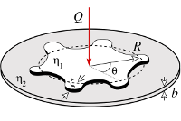